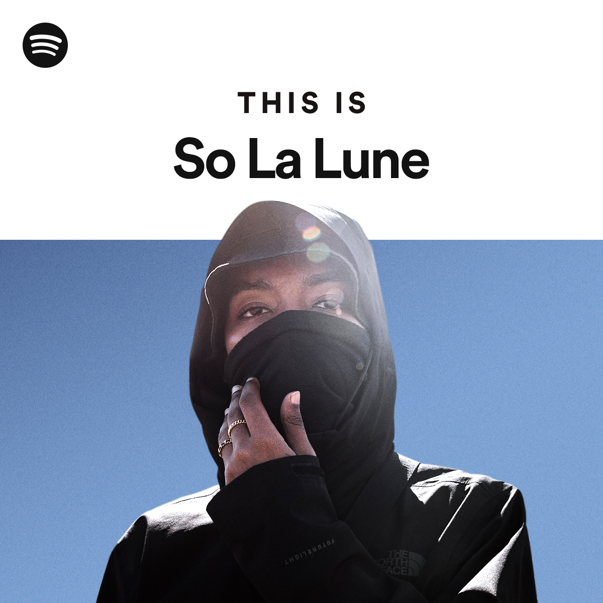

présentation de So La Lune :
So La Lune est un rappeur français originaire des Comores, né le 11 février 1997 à Lyon et ayant passé quelques années dans son pays d'origine à l'adolescence. Il fait partie de la New Wave du rap français, qui cherche à développer un nouveau rap, loin du mainstream.
Pour plus le connaitre je vous invite à regarder cette vidéo:
En interview en 2021, So la lune explique qu'il reçoit des remarques sur sa voix depuis 2018 ou 2019, alors qu'il rappe depuis plus de dix ans. C'est plutôt lorsqu'il chante que sa voix particulière, qu'il n'a jamais travaillée, se fait entendre. Sa voix est dite cassée, enrouée, pleine d'aspérités, nasillarde et outrageusement aigüe. Elle sort du cadre habitue du rap et fait beaucoup parler : c'est un atout autant qu'un frein. So la lune a fais sur trois années plus de 10 plusieurs Albums / EPs ou Mixtapes.
So la lune a collaboré avec plusieurs artistes tels que : Amine Farsi, Favé, SCH etc